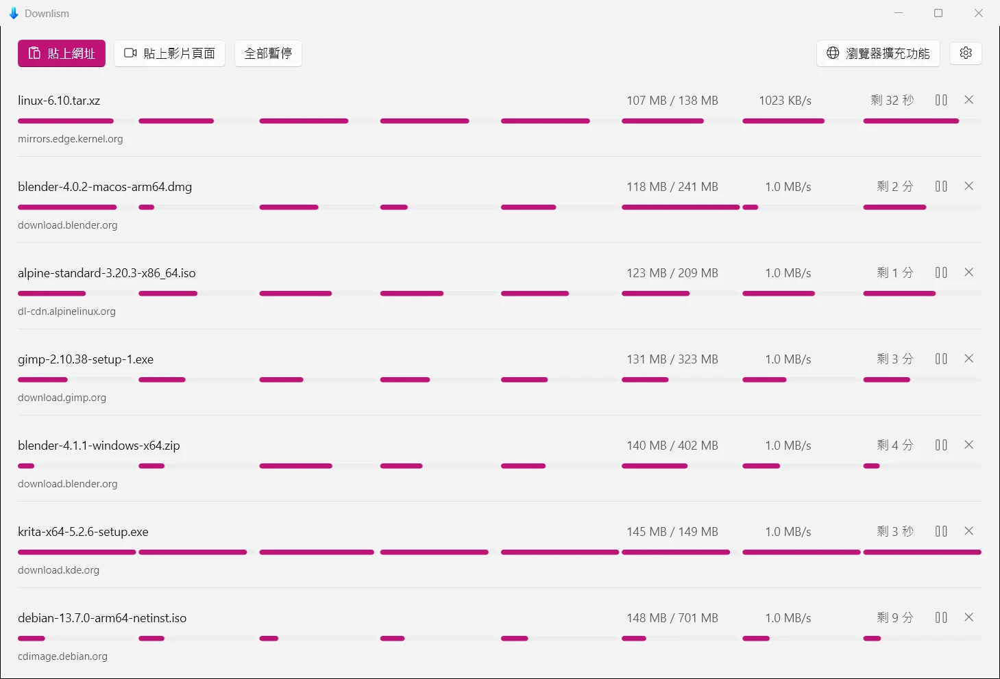
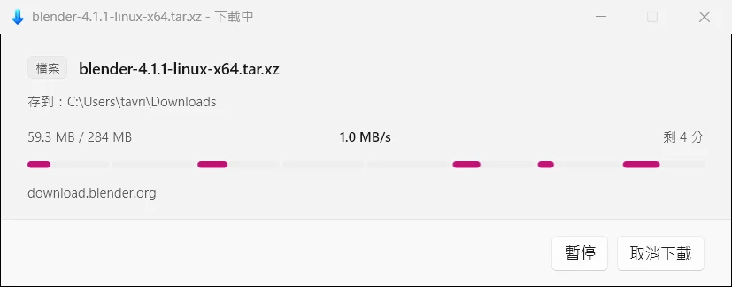
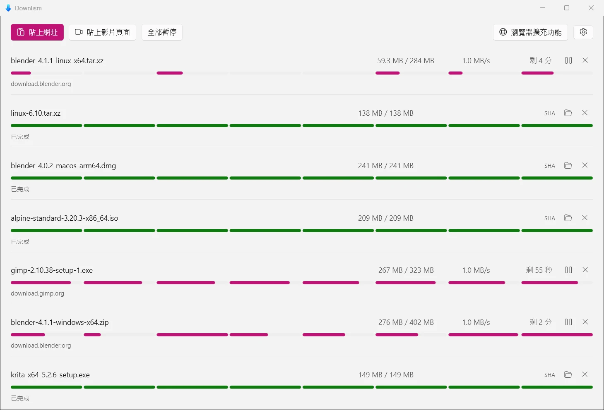
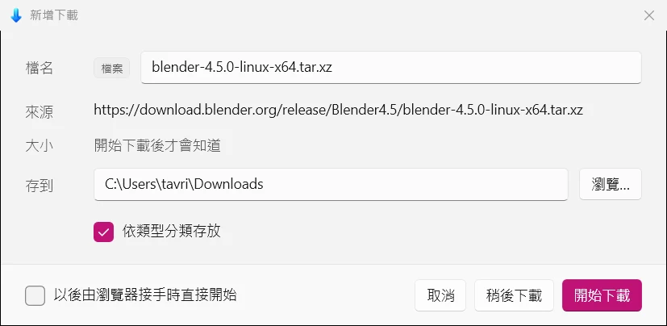
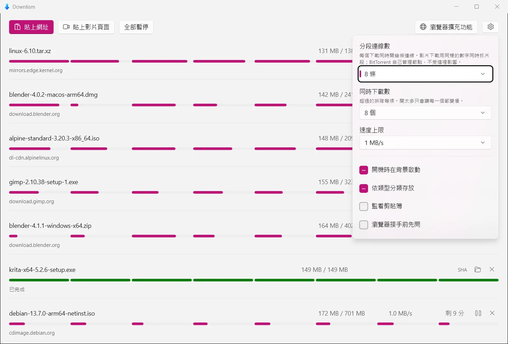

看得見每一段的
下載管理員
Downlism 把一個檔案切成多段、用多條連線同時下載，中斷後從原處接回去。網頁上播放的影片會被找出來交給 yt-dlp，磁力連結與種子檔則走內建的 BitTorrent。
它同時接手 Chrome 與 Edge 的下載：瀏覽器把檔案交過來，Downlism 接著下。

一條平均過的進度條，
會把下載管理員存在的理由藏起來
每一列下載都帶著一條分段進度條，顯示這次傳輸真正的分段界線，每一段從自己的起點往前填。哪一條連線卡住了，從平均值上永遠看不出來。
畫的是真正能保留下來的進度
這條進度條直接讀取續傳用的 sidecar，所以畫面上看到的，就是當機之後真正能接回去的位置。分段進度不寫進 SQLite，因為八條連線每秒回報數十次的寫入速率會撐大 WAL 並卡住 checkpoint。
數字不會在游標下抖動
一列每秒更新四次。數字固定在靠右對齊的欄位裡，若讓它們自由伸縮，整列會在游標底下不停抖動。


三種引擎，一份介面
下載一個檔案、下載一段影片、下載一個種子，底下幾乎沒有共通之處。但上面的一切是共通的——佇列、同時下載數、重試策略、那一列、暫停與繼續、關機前的保存、完成通知，還有那條分段進度條。
影片嗅探只看得到該看的
一個影片頁面會發出數百個請求，把它們全列出來等於沒有列：唯一有用的那一筆會被埋在數千個 .ts 片段、縮圖與廣告底下。擴充功能只收 manifest 與夠大的完整檔案，片段一律丟掉。
YouTube 這類網站只交頁面網址，不交嗅探到的串流——那些網址是簽章過、會過期、分段取用的，單獨拿出來下載不會成功。能下載的只有頁面，而 yt-dlp 認得一千多個網站的頁面。
做種在完成的瞬間停止
繼續上傳是關於別人的頻寬、在某些地方還關於法律風險的決定，不是一個下載管理員可以自己開始做的事。上傳速率仍保留 256 KB/s 上限而非歸零——多數 swarm 會餓死完全不回饋的節點，完全不上傳反而讓下載本身變慢。
yt-dlp 與 ffmpeg 不打包進安裝程式，第一次用到時才取得，放在 %LocalAppData%\Downlism\tools，超過兩週會在背景換新的。
接手時的那個小視窗
瀏覽器把下載交過來時，跳出來的是一個只有四行的視窗：檔名、來源、大小、存到哪裡，加上「開始下載」「稍後下載」「取消」。
把整個清單視窗拉到最前面只為了講一句話，等於用一千像素蓋住對方正在讀的東西。這個視窗問的是之後就問不了的三件事——叫什麼、放哪裡、現在要不要開始；一旦開始了，清單那一列才是該看的地方，而那個清單可以一直關著。
視窗高度是量出來的，不是寫死的。磁力連結的來源會折成兩行、貼上的網址只有一行、瀏覽器接手時頁尾還多一個核取方塊；任何固定高度都會在其中幾種情況下把按鈕切掉。

齒輪後面有三個數字、四個開關
分段連線數是每個下載同時開幾條連線，預設八條。影片下載用同一個數字同時抓片段；BitTorrent 不受影響，它自己管理節點。
同時下載數是超過就排隊的那個門檻，預設三個——二十個下載各開八條連線，是一百六十條連線搶同一條上行，每一個都會晚完成。
開機時在背景啟動寫的是目前使用者的 Run 機碼，帶 --background 啟動，只進系統匣不開視窗。這個開關同時出現在系統匣選單裡，兩邊改的是同一個機碼，任一邊改了另一邊立刻跟上。
關閉視窗只是收進系統匣：傳輸繼續，瀏覽器仍然可以遞交新的下載，真正結束程式的入口在系統匣選單裡。

幾個刻意的決定
完整的取捨記錄在 repo 的技術選型文件裡。這裡是其中幾條會被看見的。
- 探測用
Range: bytes=0-0，不用HEAD - CDN 拒絕或誤報 HEAD 的比例太高，而一次一位元組的 GET 就能同時定案總長度、續傳支援、最終網址、驗證碼與檔名。
- 分段下載強制 HTTP/1.1
- 在 HTTP/2 上，多條「連線」會被多工到同一條 TCP、共用同一個壅塞視窗，分段完全失去意義卻仍付出每段的額外成本。
- 關閉自動解壓縮
Range的位移計算的是壓縮後的位元組；開啟自動解壓會讓每一段落在錯誤的檔案位移上，而且產出的檔案大小正確、內容損壞，不會有任何錯誤訊息。- 單一目標檔，不做分段檔合併
SafeFileHandle自 .NET 6 起保證可由多執行緒併發寫入不同位移。分段檔再合併要多一倍磁碟空間與 I/O，且合併階段無法中斷。- 失敗會自己重試，但只重試值得重試的
- 斷線、逾時、5xx、429 會以指數退避重來，續傳資料還在磁碟上所以是接著下而不是從頭。404、403、410 一次就停——重試只是延後告訴使用者真相。
- 分類在探測之後才決定
- 網址寫
.zip而Content-Disposition給.exe的情況很常見，用網址判斷會把它歸錯櫃。認不得的副檔名留在根目錄，不會被埋進「其他」資料夾裡。 - 剪貼簿只是詢問，不會自己開始下載
- 人複製連結是為了讀、為了分享、為了搜尋。跳出來問一次的成本是一次點擊，而自作主張永遠會有錯的時候。
- 不保存 Cookie
- Cookie 是工作階段憑證，為了讓續傳方便一點而把它寫到磁碟上並不划算。需要登入的續傳會直接失敗並說明原因。
- 瀏覽器溝通走 Named Pipe，不走 localhost 連接埠
- 連接埠會觸發防火牆詢問、會衝突，而且任何本機程式都能連上去排下載。Pipe 的 ACL 只開放目前使用者。
現況
0.5.0 是預覽版。下面這張表照著 repo 裡的狀態寫，包含還沒開始的那一項。
| 功能 | 狀態 |
|---|---|
| 分段下載、斷點續傳、佇列、速度上限 | 完成 |
| 貼上網址下載、剪貼簿監看 | 完成 |
| 連線中斷自動重試（指數退避） | 完成 |
| 依類型分類存放 | 完成 |
| SHA-256 雜湊驗證 | 完成 |
| 完成／失敗系統匣通知 | 完成 |
| 清單跨重啟保留（SQLite） | 完成 |
| 瀏覽器擴充功能與 Native Messaging Host（Chrome、Edge） | 完成 |
| 安裝程式與瀏覽器登記 | 完成 |
| 系統匣常駐與開機自啟 | 完成 |
| 影片嗅探（HLS／DASH／直接檔案） | 完成 |
| 影片下載（yt-dlp + ffmpeg，首次使用時取得） | 完成 |
| BitTorrent（磁力連結、.torrent、DHT） | 完成 |
| 每個下載的確認視窗（檔名、資料夾、稍後下載） | 完成 |
| 設定面板（分段連線數、同時下載數、速度上限） | 完成 |
| 擴充功能安裝教學（安裝後自動出現） | 完成 |
| Firefox 擴充功能 | 未開始 |
Firefox 暫時不支援
Firefox 強制簽章，about:debugging 的臨時載入重開瀏覽器就消失，必須先跑完 AMO 簽章流程。這是技術限制，不是取捨。
程式尚未簽章
SmartScreen 會顯示「發行者：不明」，防毒也可能誤報——寫登錄檔、掛進瀏覽器、大量連線、下載檔案到磁碟，這組行為與木馬下載器高度重疊。這是已知且刻意的決定。
一個安裝程式
Downlism.Setup.exe，163 MB，一個檔案。裡面同時帶著兩種版型與共用執行環境的套件，安裝時自己決定裝哪一種。
| 裝到機器上的是 | 大小 | 需要什麼 |
|---|---|---|
| 共用版型 | 122 MB | 機器上登錄一份共用的 Windows App 執行環境 |
| 自帶版型 | 194 MB | 什麼都不需要，所有東西都在安裝資料夾裡 |
共用版型的 WinUI 來自 Windows 集中保管的 MSIX framework package，整台機器只有一份，Flowlism 與 Peeklism 指向同一份。預設安裝到 %LocalAppData%\Programs\Downlism。
不需要系統管理員，也不需要開發人員模式
執行環境套件是微軟簽章的 Store 元件，跟 sideload 未簽章 App 是兩回事；微軟的安裝程式只有「替全機所有使用者佈建」那一步要提權，失敗時自動退回只替目前使用者註冊。
拒絕或失敗都不再是死路
安裝程式先偵測；已經登錄過就直接用共用版型，什麼都不問。沒有才詢問，而回答「否」、或機器根本不允許登錄共用元件時，它改裝自帶版型繼續走完。
元件包在安裝程式裡，不用連網
共用的是它們最後放在哪裡，不是它們從哪裡來。安裝程式在最需要能動的那一刻不依賴網路，也就少一件會失敗的事。
Windows 11 build 26100 以上
擴充功能以開發者模式載入，安裝程式已經先幫 Chrome、Edge 登記好 Native Messaging Host。安裝完成後會直接跳出四個編號步驟的教學。